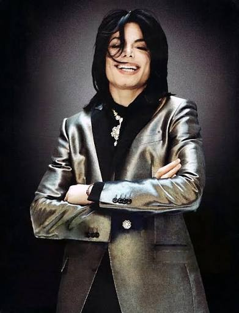

The Jackson 5 Tour (1970–1971)
The Jackson 5 First National Tour (1971)
The Jackson 5 Second National Tour (1972)
The Jackson 5 European Tour (1972)
The Jackson 5 World Tour (1973–1975)
The Jacksons Tour (1977)
Interim Tour (1978)
Destiny World Tour (1979–1980)
Triumph Tour (1981)
Victory Tour (1984): Esta fue la última gira en la que Michael participó con sus hermanos.
Bad World Tour (1987–1989): Su primera gira en solitario. Promocionó el álbum Bad, dio 123 conciertos y rompió récords de asistencia.
Dangerous World Tour (1992–1993): Una de las giras más espectaculares a nivel visual y técnico. Todas las ganancias fueron donadas a Heal the World.
HIStory World Tour (1996–1997): Su última gira mundial oficial. Visitó 35 países y reunió a más de 4.5 millones de fanáticos.
↑ Inicio